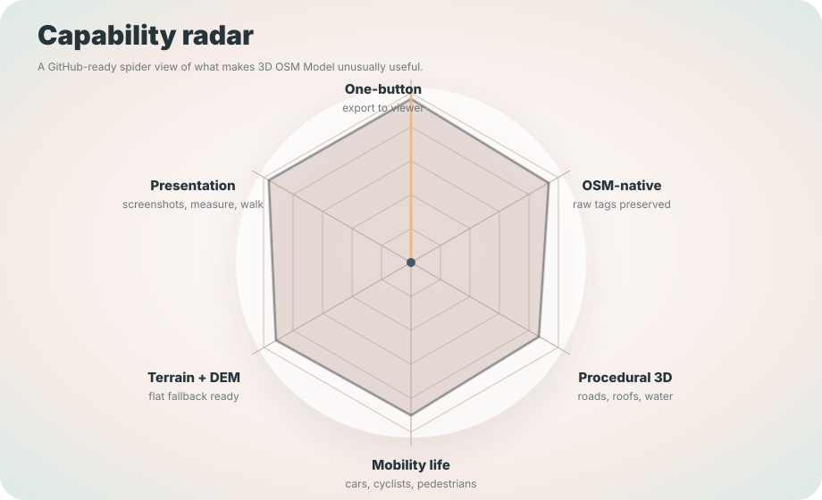

Native OSM tags
Fields such as building, building_levels, highway, waterway, landuse, natural, leisure, and width stay visible through the export.
QGIS + OpenStreetMap + Three.js
Select a study area in QGIS, download OpenStreetMap data, and open a live procedural 3D city viewer for planning, teaching, mobility reading, and public communication.
3D OSM Model is not just a visualization trick. It makes the first version of an urban context model fast enough to use during design exploration, studio review, public meetings, and classroom demonstrations.
Fields such as building, building_levels, highway, waterway, landuse, natural, leisure, and width stay visible through the export.
Buildings, roofs, roads, sidewalks, bike lanes, waterways, trees, vehicles, pedestrians, and furniture are generated in the viewer.
Golden-hour lighting, screenshots, measurement, camera bookmarks, walk mode, and a live dashboard support demos without extra tooling.
The plugin hides the rough edges: study area logic, Overpass fallback, clipping, reprojection, GeoJSON writing, manifest defaults, local serving, and browser launch.
Use the current map extent or selected polygon features in QGIS.
The largest safe study circle is fitted and clamped to a polite request size.
Overpass mirrors provide buildings, roads, water, greens, trees, and furniture.
Native-tag GeoJSON and a viewer manifest are written to the web data folder.
The local Three.js viewer opens with controls for style, sun, walk, and screenshots.
The plugin is strongest when the pieces are seen together: a simple QGIS action, native OSM semantics, procedural 3D detail, live mobility, terrain context, and shareable output.

Use these scenarios to prepare GitHub screenshots, classroom examples, or stakeholder demos.
Show the one-click flow, dashboard metrics, function-colored buildings, roads, sidewalks, cars, and pedestrians.
Show bike lanes, cyclists, lamps, benches, bus stops, and density controls on a readable corridor.
Show waterways, trees, greens, the model base, DEM support, and golden-hour shadows.
The same contract powers the sample city and real exports. The viewer reads a manifest, loads GeoJSON layers, and builds the scene procedurally.
